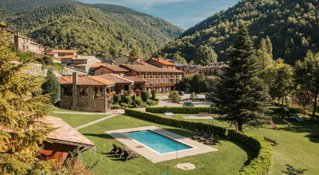
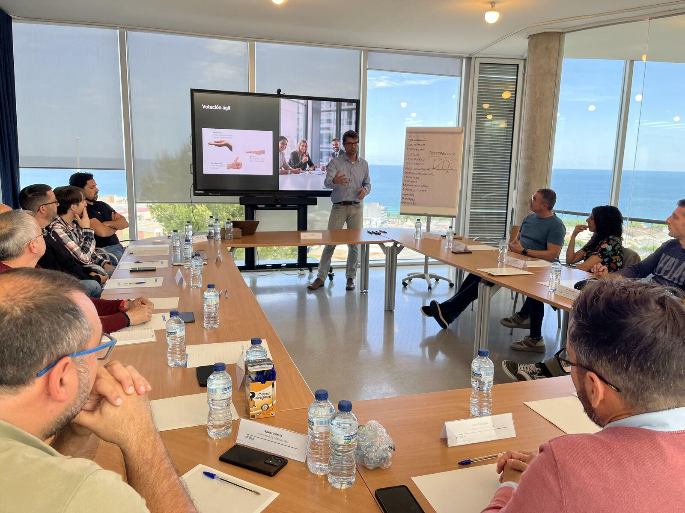

Strategic alignment and friction resolution for scale-stage companies.
Turnkey executive retreats, closed-door C-suite alignment, and remote team reconnection across Barcelona and Catalan countryside estates.Trusted by operators who’ve built at
What breaks when fast-growing companies hit pressure in the AI era
When fast-growing scale-ups stall, the point of failure is no longer code, tools, or AI models, it is leadership alignment. In remote-first companies, AI creates an illusion of velocity while unspoken C-suite friction quietly delays critical decisions. Without physical proximity, teams avoid hard commercial trade-offs, hiding behind polite Slack messages while the board waits for decisive execution.
Source: Noam Wasserman, Harvard Business School
Velocity Drag
AI tools generate code, slide decks, and workflows in seconds, but executive decision latency worsens. Fragmented bottom-up tools proliferate while leadership avoids tough calls on ownership, capital allocation, and strategy.
Remote Latency
In distributed teams, leadership misalignment stays hidden longer. Without informal face-to-face debate, disagreement turns into passive friction: silent Slack approvals, polite meetings, and territorial silo defense.
The Offsite Intervention
You cannot dismantle systemic relational debt over a Zoom call. A structured offsite pulls founders and C-suite peers into a dedicated room to surface unexpressed tension, codify decision rights (RACI), and leave with a binding 90-day compact.
Who will join us
Select the operational depth and cohort composition matched to your team’s current phase.
The Slowing-Down Offsite
2–6 co-founders / exec committee
- Behavioral self-awareness & stress diagnostics
- Relational reset & founder dynamics under pressure
- 500-year-old historic stone estate outside Girona

Strategy to Execution Offsite
5–12 C-suite executives
- Confidential 1:1 C-suite intake & friction matrix
- In-room operator mediation by former CEOs
- RACI governance compact & 90-day execution board
- Secluded private Catalan Masia

Company Offsite
12 to 100 people
- Remote-first & distributed scale-ups
- Turnkey logistics, experiential dining & team cohesion
- Poblenou Creative Atelier / Norrsken House + private catamaran
Three Places to Go
Physical environments curated specifically for strategic focus, creative friction, or team connection.

Setting: Urban Innovation Atelier & Poblenou Loft / Norrsken House overlooking the sea.
Dynamic, walkable creative hub. Designed for cross-functional company offsites, product roadmap hackathons, and high-energy distributed team reunions.

Setting: Secluded 500-year-old historic countryside estate (Solsona / Costa Brava).
High-privacy retreat surrounded by quiet nature, with zero urban distractions. Ideal for high-stakes C-suite strategy-to-execution mediation and co-founder resets.

Setting: Penedès wine region estate & coastal hills near Sitges.
The perfect midpoint between deep focus and sensory immersion. Designed for executive committees wanting strategic debates by day and world-class wine gastronomy by dusk.
Three Ways to Work With Us
From self-directed execution to fully turnkey operator moderation.
You Decide, We Facilitate
How it works: You set the strategic agenda and internal working topics. We provide the curated venue (Atelier, Masia, or Vineyard), manage 100% of the on-ground logistics, and supply targeted workshop facilitation only where needed.
Best for: teams with a strong internal facilitator or People Lead who simply want the planning burden removed.
Co-Created Strategy
How it works: We conduct a lightweight pre-offsite survey to surface team tensions. Together, we co-design the strategic schedule, alternating between your internal company presentations and operator-led alignment workshops.
Best for: fast-scaling teams needing experienced external steering to keep discussions on track.
Full Diagnostic & Preparation
How it works: End-to-end intervention. We lead confidential 1:1 stakeholder discovery interviews prior to arrival, draft the Leadership Friction Matrix, moderate the hard closed-room debates, and deliver a signed 90-day binding governance compact with quarterly follow-up reviews.
Best for: C-suites facing acute decision drag, co-founder friction, or post-fundraise governance bottlenecks.
Build Your Offsite
Five questions. One tailored blueprint, reviewed personally by Sven and Farid within 24 business hours.
Former C-Suite Operators & Venture Studio Designers
Dr. Sven Mulfinger
Kuma PartnersExecutive alignment specialist, former CEO and Vistage Chair. Expert in mediating leadership friction, scaling governance, and turning strategic friction into 90-day execution compacts.
Farid
NonameyetStrategic designer, fractional Chief Innovation Officer. Specialist in high-tempo product innovation, brand architecture, and collaborative environments for distributed scale-ups.